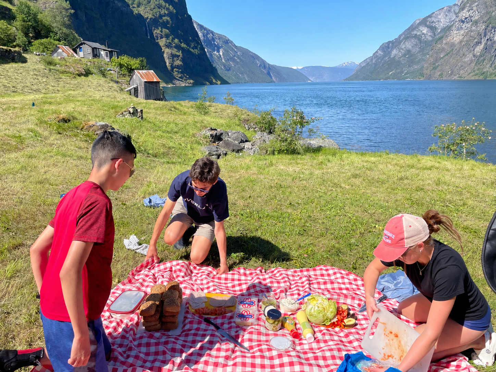
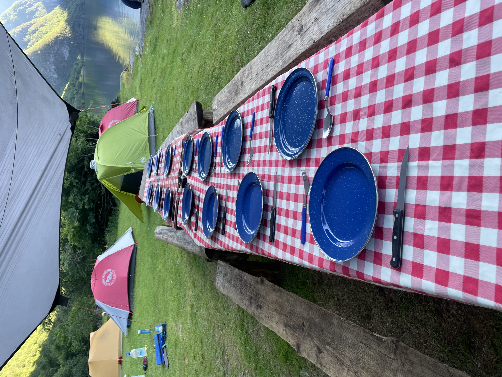

Backpacking is an ounces game.
Every extra item has to answer for itself. Every sock, spoon, sweatshirt, and snack gets silently judged before it earns a spot in the pack. Weight is tax. Weight is consequence.
So, on paper, a picnic blanket is a ridiculous thing to bring into the backcountry.
It is not shelter.
It is not food.
It is not water.
It does not keep you alive in any obvious way.
It is just extra fabric. Extra bulk. Extra weight.
And yet, after my summers with Overland, I have become a quiet defender of the picnic blanket.
I did not come to this belief naturally. I had to be talked into it. And somewhere along the way, I learned that not everything useful looks like utility at first.
A good picnic blanket does something strange.
It turns ground into place.
Before the blanket, lunch is a loose concept. Packs drop wherever. The group scatters. Someone opens peanut butter near a rock. Someone else is eating trail mix three feet from a shoe. Tortillas appear from nowhere. The whole thing becomes a mildly charming, mildly chaotic free-for-all.
Then the blanket comes out.
Suddenly, there is a center.

The red and white checkerboard pattern lands on the dirt like an invitation that says: food is here. People are here. Come sit.
And they do.
The group gathers around this square of fabric like it has authority. The blanket creates a boundary without needing rules. It makes a meal feel less like a fuel stop and more like a moment.
In the backcountry, so much of the day is movement. Wake up. Break camp. Hike. Filter water. Reapply sunscreen. Keep hiking. Count heads. Check for blisters. Find the trail. Keep going.
A picnic blanket interrupts that.
It tells everyone: pause here.
It turns ground into place.
It gives the group a little temporary home.
Maybe that sounds dramatic for a piece of plastic-backed fabric, but objects have always had this power. A campfire does not just provide heat. A table does not just hold plates. Certain objects organize human behavior. They teach us how to gather.
The picnic blanket is one of those objects.
It is a stage for grapes, crushed chips, and sandwiches made with questionable ingredients. It is a soft border between the meal and the mud. It is a visual cue that says this is not just eating; this is eating together.
And importantly, it looks good in photos.

The picnic blanket is not impressive equipment. It will not win a gear review.
But it changes the feeling of a place.
It turns a patch of dirt into a dining room, a snack break into a ritual, a group of tired nomads into something that looks, for a moment, like a tiny traveling family.
So yes, backpacking is an ounces game. But not every ounce is about efficiency.
The picnic blanket earns its weight because it doesn't just carry fabric.
It carries the meal.
It carries the pause.
It carries the people.
And in the backcountry, that's not extra, that's the point.